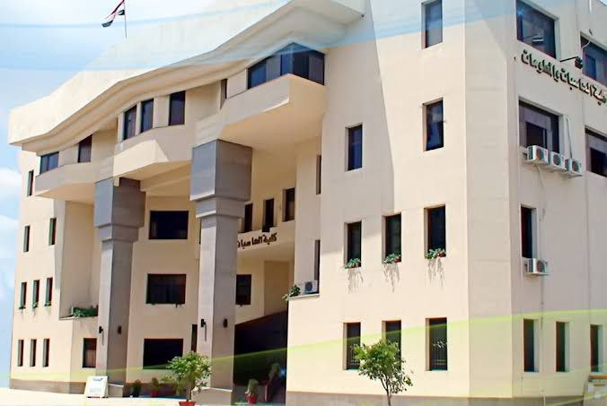
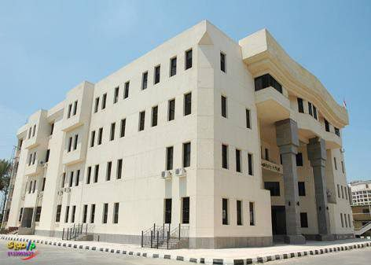
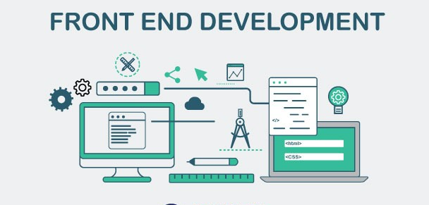

We provide a full guidance for the Faculty of Computers and Information sciences.
Help
You can contact us and ask for the help! we will do our best to answer all of your questions.
Advices
We give you some tips to develop your skills in the major.
Overview
* The Faculty of Computers and Information, Mansoura University, was established in 1996.
* It is located inside Mansoura University.
* FCIS MU is one of the first four faculties of computers and information that was established in Egyptian universities.
* The study began in it in the academic year 1996/1997.
* FCIS MU now accepts from both divisions (Mathematics , Science).


FAQ
Q: Am i going to be accepted if i am a science division graduated?
-Yes , you will be accepted at any department you choose!
Q: Is there any difference between science division graduated and maths division graduated?
- No,there is no difference between them! but science division graduated will have additional course (maths)in the first semester and he should pass it.
Q: Am I going to find job opportunities after graduation?
- yes, you will, if you worked hard to develop yourself in a specific track you can even work while you are a student!
Tracks

The front end is the user-facing part of a website. It's what you see when you type in something like "Facebook.com
The back end is a combination of servers and databases. Servers control how users access files. Databases are organized and structured collections of dataRead More..
Android software development is the process by which new applications are created for devices running the Android operating system.
In this department,
students study the basics of information technology,
computer science, computer engineering,
database and network management,
and electronic and information management,
in addition to the fields of communications and computing programs,
and management of information and network systems.
IS
it is the link between computer science Tracks and various fields of work,
which helps students to acquire knowledge and skills,
to analyze and design information systems in any of the governmental or private business organizations and institutions.
CS
includes most programming and computer languages,
and the mathematical subjects in it are less than the rest of the departments.
AI
This department includes the following scientific areas: Artificial Intelligence, Intelligent Systems, Machine Learning, Expert Systems, Neural Networks, Natural Language Processing, Multi-Proxy Systems, Knowledge Base Systems, and Robotics.
BIO
specialized in the design and development of information technology and its practical applications within medical institutions. This software helps to provide doctors and surgeons with accurate quantitative and visual data on the patient's health status, which in turn contributes to the diagnosis of various diseases more accurately.
software Engineering
concerned with the formation of the program from its early stages during the analysis of the problem, and then designing, and writing the program until it is tested, installed on the hardware, and carrying out the maintenance process.
About Us
-We are computer science students who want to help people who are interested in computer science, and want to join FCIS MU.
-We believe
Technology is the source of human progress.
It has the power to transform our world
from illness to health,
from poverty to prosperity,
from conflict to peace.
It has the power to transform our lives
for ourselves,
for our families,
for our communities.